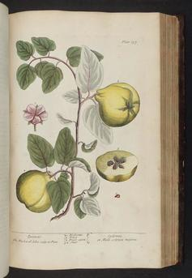
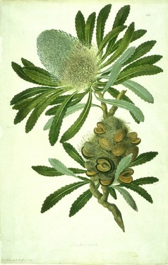
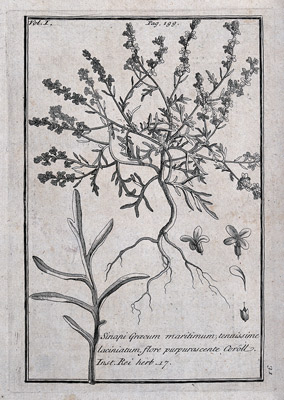

I am passionate about botanical art and artists. I lived in Costa Rica for several years studying plants until I discovered my passion for botanical arts.
|  |
The Gentleman GardenerAlexander Marshal was gentleman gardener living in London who studied rare plants. He decided to record the native and newly imported plants from the Near East and the USA growing in gardens. His florilegium contains 159 folios of watercolour paintings for his own personal pleasure. They contain more than 600 plant species, and detailed studies of insects, birds and animals. |
|  |
Early Australian Botanical ArtSydney Parkinson sailed with Captain Cook on the Endeavour and was the first non-Aboriginal artist to set foot on Australian soil. He was the first botanical artist to draw and paint plants collected in Australia. |
|  |
Royal Botanical PainterClaude Aubriet (1665-1742) a botanical illustrator at the Jardin du Roi in Paris (the main botanical garden in France) prior to becoming the Royal Botanical Painter. He mainly painted using body colour on vellum. |